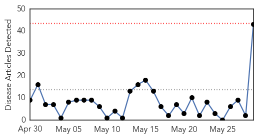
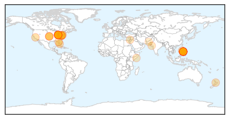

Unknown
30-Day Web Trend
6 alerts, 6 warnings

30-Day Twitter Trend
0 alerts, 0 warnings

Article Locations

Article Confidences

Top Articles:
- 0.998
- CDC Expert What New Mexicans Need to Know About MERS
- 0.997
- CDC Expert What Missouri Needs to Know about MERS
- 0.997
- Third MERS case in U.S. raises questions
- 0.997
- Deadly respiratory disease MERS spreads to Iran
- 0.996
- Third Suspected MERS Case Was False Alarm
- 0.995
- Saudi Arabia ‘working with WHO to fight Mers’
- 0.995
- Saudi Health Minister Says Working With WHO To Fight MERS
- 0.994
- Saudi working with WHO to fight MERS
- 0.994
- CDC: Indiana MERS Patient Did Not Spread Virus To Colleague
- 0.985
- MERS won't become pandemic
- 0.971
- Tick bite leads to Oklahoma man’s death
- 0.967
- State advises NC doctors about MERS
- 0.952
- Hunt for MERS source should look beyond camels
- 0.948
- Deadly pig virus re-infects U.S. farms, fuels supply fears
- 0.941
- In Legionnaires' outbreak UAB waited too long to notify but took proper steps to stop spread, state says
- 0.935
- MERS screening centre starts functioning at Mangalore International Airport
- 0.929
- Newsroom Panama
- 0.921
- Hunt For MERS Source Should Look Beyond Camels - Veterinary Officials
- 0.917
- Chicago Tribune
- 0.917
- Chicago Tribune
- 0.917
- Chicago Tribune
- 0.917
- Chicago Tribune
- 0.917
- Chicago Tribune
- 0.917
- Chicago Tribune
- 0.917
- Chicago Tribune
- 0.917
- Chicago Tribune
- 0.917
- Chicago Tribune
- 0.917
- Chicago Tribune
- 0.917
- Chicago Tribune
- 0.917
- Chicago Tribune
- 0.917
- Chicago Tribune
- 0.917
- Chicago Tribune
- 0.917
- Chicago Tribune
- 0.917
- Chicago Tribune
- 0.917
- Chicago Tribune
- 0.917
- Chicago Tribune
- 0.917
- Chicago Tribune
- 0.917
- Chicago Tribune
- 0.917
- Chicago Tribune
- 0.917
- Chicago Tribune
- 0.917
- Chicago Tribune
- 0.917
- Chicago Tribune
- 0.917
- Chicago Tribune
- 0.917
- Chicago Tribune
- 0.917
- Chicago Tribune
- 0.917
- Chicago Tribune
- 0.914
- UNL team explores new approach to HIV vaccine
- 0.910
- The world windows to Thailand
- 0.900
- UNL team explores new approach to HIV vaccine
- 0.893
- Fannin TB exposure count now sits at 84
Showing top 50 articles...
Top Tweets:
- 0.898
- MT: RIP Ciro de Quadros, 1940-2014. Public health & vaccine hero. Mentor. Friend. @sabinvaccine
Measles
30-Day Web Trend
0 alerts, 0 warnings

30-Day Twitter Trend
0 alerts, 0 warnings

Article Locations
Article Confidences
Top Articles:
- 0.998
- US Measles Cases Reach 20-Year High
- 0.994
- Ohio Urges Vaccinations For Measles, Mumps After Outbreaks
- 0.993
- Measles Infections in U.S. Reach 20-Year High : Discovery News
- 0.989
- Travellers Fuel 20-Year High Of Measles Cases
- 0.988
- CDC: Record-Breaking Year For Measles Due To Travel, Non-Vaccinated Residents
- 0.987
- U.S. Measles Cases Highest In 20 Years
- 0.987
- Measles cases reach 20-year high in the United States: CDC
- 0.986
- Measles cases on rise in United States
- 0.985
- Measles Hits Amish Communities, And U.S. Cases Reach 20-Year High
- 0.985
- CDC: It's a Record-Breaking Year For Measles in the U.S.
- 0.983
- U.S. Measles Cases Hit 20-Year High
- 0.981
- U.S. measles cases reach 20-year high
- 0.980
- Measles Is Making a Huge Comeback This Year in America
- 0.980
- Measles cases in the United States reach 20-year high
- 0.978
- U.S. measles outbreak sets record for post-elimination era
- 0.978
- Measles cases in the US reach 20-year high
- 0.977
- Measles Outbreak Reaches 20-Year High
- 0.976
- We’ve Already Had A Record-Breaking Number Of Measles Cases This Year
- 0.973
- CDC: Measles cases in USA hit 20-year high
- 0.973
- As measles cases increase, a sharp call for vaccinations
- 0.973
- Measles Cases In The US Reach 20-Year High
- 0.972
- CDC urges measles vaccination before summer travel season
- 0.970
- Highest number of U.S. measles cases since 2000
- 0.969
- US Measles Cases Are at a Record High Since Being Previously Eliminated
- 0.968
- U.S. measles cases reach 20-year high, most come from travel: CDC - Modern Healthcare Vital Signs
- 0.968
- CDC Blames Unvaccinated For Record Measles Outbreak
- 0.966
- US Measles Cases See Big Jump in 2014
- 0.965
- Measles Cases Hit New Record
- 0.964
- Measles in U.S. reaches two-decade high, hits Amish communities hardest
- 0.960
- CDC: Measles in the US at 20-year high
- 0.956
- US measles cases reach 20-year high
- 0.951
- PH linked to record-high measles cases in US
- 0.929
- Armageddon measles? You may need to check
- 0.929
- U.S. measles cases are at a record high, and it’s all anti-vaxxers’ fault
- 0.925
- CDC: 2014 a record year for measles, California has 60 cases
- 0.921
- Measles Hits 20-Year High; Most U.S. Cases Imported From Philippines : Health : Headlines & Global News
- 0.910
- CDC: Highest number of U.S. measles cases since 2000
- 0.776
- 'Eliminated' disease making a comeback
- 0.764
- Measles kills child, Rajkot Municipal Corporation battles to contain outbreak
- 0.739
- Banadir hospital, where the sick in Somalia come for relief - Special Reports
- 0.697
- Clean Hands Help Combat Measles Outbreak, Columbia University Infection Expert Says
- 0.634
- Planning a summer vacation? Why the CDC says it’s “imperative” to get vaccinated
- 0.621
- Time for a second dose in Punjab
Top Tweets:
-
No tweets found for May 29, 2014